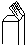

TUYAUX.
IL y a à vérifier dans les tuyaux de l'Orgue.
1o On doit comparer les tuyaux avec le devis, pour reconnaître si leur construction et leur dimension sont conformes.
2o On remarque si ces tuyaux sont généralement placés commodément et avantageusement sur les sommiers, pour que le son puisse se produire et se propager sans obstacle.
3o Si les tuyaux en métal sont d'une force suffisante pour pouvoir résister à la vibration de l'air, afin qu'ils puissent conserver leur intonation et leur accord ; il y a à porter une grande attention surtout sur les pieds, qui doivent être de la même composition de matière que celle du corps des tuyaux, pour qu'ils aient la force convenable de pouvoir le supporter.
4o Si les tuyaux en bois ont leur bout garnis de plaques en métal (dites accordoirs) ; c'est-à-dire que ces accordoirs sont indispensables à chaque tuyau en bois, depuis le plus court jusqu'à celui qui a 4 pieds de longueur au moins.
5o Bien examiner si tous les tuyaux de l'Orgue sont généralement coupés bien horizontalement à leur extrémité supérieure. Les accordoirs des tuyaux en bois doivent être placés de manière qu'ils représentent tout au plus un angle de 45 degrés. 
Les bords de l'extrémité des tuyaux en métal doivent être exactement arrondis, et non recourbés en forme de cordon. Dans le cas où l'accordage de l'instrument a été fait par d'autres moyens tout-à-fait irréguliers et inconvenables, soit en enfonçant dans l'intérieur des tuyaux, des morceaux de bois ou des parcelles métalliques, il faut faire disparaître tous ces mauvais moyens et faire réparer tous les tuyaux tronqués ou mutilés.
6o Tous les tuyaux en métal doivent être très-bien dressés et polis, soit dans leur intérieur, soit à l'extérieur ; premièrement, parce que si les parois de leur intérieur se trouvent inégales et raboteuses, elles opposent une grande résistance à la vibration de l'air qui produit le son, et en dernier lieu, leur intérieur mal achevé détruit tout l'effet d'une belle apparence, et annonce un ouvrage très-négligé.
7o On doit encore mettre toute attention pour reconnaître si les lèvres, les embouchures et les lumières des tuyaux en métal sont exécutées régulièrement et avec soin, et dans quelle proportion se trouve la largeur des bouches avec la circonférence des tuyaux, et si cette proportion a été suivie régulièrement dans tous les tuyaux qui forment un jeu.
Si les tuyaux sont bien proprement soudés et arrondis ; de plus, si les tuyaux en bois représentent sur leur coupe la forme rectangulaire à côtés égaux , ou la forme d'un carré oblong , et si, dans ce dernier cas, leurs lèvres sont faites sur les côtés larges ou sur les étroits, et dans quelle proportion se trouve la hauteur de la bouche proportionnellement à la largeur de la lèvre.
8o On doit inspecter les bouchons des jeux des bourdons ; s'ils sont bien garnis et exactement ajustés.
9o Si tous les tuyaux, en général, sont posés bien perpendiculairement et solidement sur les chappes des sommiers.
Si les grands tuyaux, depuis 4 jusqu'à 16 pieds de hauteur, sont solidement accrochés à de forts liteaux en bois pour empêcher leur chute.
10o On a à vérifier attentivement le diapason de chaque jeu pour remarquer,
(A) Si les
Basses sont bien proportionnées comparativement au Dessus, ou si au
contraire les tuyaux des Basses ont une taille trop petite, ce qui produirait un changement
dans la force et le caractère du jeu. Le seul moyen d'obtenir une égalité
parfaite et naturelle pour le caractère et la force du son, proportionnée
à chaque tuyau d'un jeu et d'une octave à l'autre, est de calculer son
diapason, d'après le calcul de proportion de
1 :  8.
D'après ce calcul, on remarquera que la moitié du diamètre d'un
tuyau quelconque, tombera toujours sur celui qui fait l'intervalle d'une grande
décime ou le 16e tuyau suivant.
8.
D'après ce calcul, on remarquera que la moitié du diamètre d'un
tuyau quelconque, tombera toujours sur celui qui fait l'intervalle d'une grande
décime ou le 16e tuyau suivant.
(B) Si les diapasons entre les jeux principaux des gamba et des cornettes appartenant au même clavier, se distinguent clairement l'un de l'autre.
(C) Si les jeux des différents claviers sont construits d'après différents diapasons, et surtout si celui employé pour le second clavier est plus serré que le diapason employé pour le premier ; afin que les claviers puissent se distinguer l'un de l'autre par leur caractère particulier.
11o On remarque les tuyaux qui sont alimentés par les porte-vent en plomb, lesquels cependant ne doivent pas se trouver en grand nombre, et seulement dans le cas où la place n'aurait pas permis de donner les dimensions nécessaires aux sommiers, pour pouvoir porter directement tous les tuyaux sur leur chappes : dans cette circonstance, leur déplacement serait excusable. Mais il est important d'examiner si les porte-vent sont d'un diamètre convenable pour l'alimentation de ces tuyaux ; on doit, de plus, vérifier strictement si les tuyaux que l'on a remarqués peuvent parler avec leur puissance et leur promptitude nécessaires. Si l'on remarque un effet contraire, alors les porte-vent doivent être remplacés par d'autres d'un diamètre plus grand.
Il est urgent d'examiner dans les jeux à anches,
(A) Si toutes leurs parties sont bien confectionnées conformément au devis.
(B) Si leurs corps sont solidement ajustés sur les têtes des embouchures.
(C) Si les têtes des embouchures sont fixées et solidement ajustées dans leur boîte, et si ces boîtes sont bien ajustées sur la chappe des sommiers ; sans quoi, il ne faut pas compter sur l'invariabilité de l'intonation et de l'accord.
(D) On doit faire attention si les embouchures en général, sont bien achevées dans l'exécution de leur travail, en examinant surtout les cuillères, les languettes et les accordoirs.
Les languettes doivent être dressées avec régularité dans leur ajustage, au point que lorsque l'on appuie sur leurs extrémités, elles puissent fermer hermétiquement l'embouchure.
Si l'embouchure se trouve bien ajustée et fixée dans la tête. La force des accordoirs doit être proportionnée à celle de la languette.
On devra également observer si la position des accordoirs n'est pas trop rapprochée du coin qui retient la languette, car en cette circonstance, on ne pourrait pas les accorder avec les autres jeux par une température très-froide.
Après toutes les épreuves mentionnées, il y a encore à décider :
Si généralement toutes les principales pièces de l'Orgue, telles que les sommiers, les tuyaux, le mécanisme, les porte-vent et la soufflerie ont été disposées et distribuées dans l'emplacement le plus convenable pour le local de l'instrument ; et l'on pourra par cet examen juger si le facteur a fait preuve de capacité, d'intelligence, et des connaissances parfaites d'un artiste expérimenté.
Il est de la plus grande importance pour le vérificateur de connaître les idées et les raisons qui ont guidé le facteur dans la confection de son instrument, et l'artiste qui aura exécuté ses ouvrages d'après les principes et les règles de son art, ne se refusera jamais à fournir toutes les explications dont le vérificateur aura besoin ; mais si le facteur n'est qu'un simple artisan, routinier de profession, alors il sera déjà suffisamment reconnu dans l'inspection de ses travaux, et on pourra plutôt se satisfaire par l'examen de son ouvrage, que par les explications qu'il pourrait donner.
D'après tout ce qui a été vu, remarqué et entendu dans l'examen dans l'examen, le vérificateur doit répondre à cette question :
L'Orgue est-il recevable ou non ?
En réponse à cette question, voici mon opinion :
1o Si le nouvel Orgue est conforme dans toutes ses parties aux plans et devis ; de plus, si toutes ses parties sont disposées convenablement, et si elles ont été confectionnées avec soin et solidité ; si le caractère du son des jeux se produit avec précision et vigueur, et d'une manière agréable à l'ouïe ; si l'effet de l'Orgue joué en plein, est d'une puissance suffisante pour la grandeur de l'église et pour le nombre des fidèles qui peuvent s'y réunir ; alors non seulement il n'y a aucun motif qui puisse en empêcher l'acceptation, mais, au contraire, il n'y aurait qu'à féliciter la commune de posséder un pareil instrument.
2o S'il y a parfois quelques légères critiques sur la confection de l'instrument, il faut toujours examiner les raisons et les motifs qui ont décidé le facteur à s'écarter du devis, dans l'exécution de ses engagements ; s'il a agit simplement pour son propre intérêt, ou si c'est pour sa commodité et par des habitudes d'exécution particulières, qui ne peuvent avoir aucun résultat positivement nuisible à l'instrument, mais qui ne sont cependant nullement conforme à ses engagements, ou si ces changements ont été peut-être avantageux à l'instrument ; alors, avant de décider, on doit consulter le facteur pour apprécier ses explications.
S'il y a lieu à décider pour le premier motif, on aura le droit de faire une réduction proportionnelle sur le prix qui a été stipulé, ou bien le facteur sera tenu de mettre l'Orgue dans l'état qui a été convenu ; si l'on avait à décider sur le second cas, il n'y aurait pas de réclamation à lui faire, quoiqu'il ne fût pas à l'abri de reproche pour avoir dévié de son chef des plans et devis.
Mais, au contraire, si, dans le troisième cas, le facteur d'Orgues s'est écarté des plans et devis, pour obtenir de meilleurs résultats de l'instrument, tout en sacrifiant ses propres intérêts, alors non-seulement il est entièrement irréprochable, mais plutôt digne d'une mention honorable et d'une récompense particulière, à titre d'indemnité.
3o Si le nouvel Orgue contient des défauts faciles à réparer, on peut ajourner l'acceptation jusqu'à ce que tout ait été corrigé.
Dans ce genre de défauts on doit considérer les suivants :
(A) Si les jeux, qui, de leur nature et d'après ce qui a été déterminé dans le devis, devaient être en métal, ont été confectionnés en partie ou entièrement en bois ; si l'on a employé du bois de sapin pour la confection des différentes parties, au lieu d'autres qualités qu'il aurait été convenu d'employer ; si la combinaison des fournitures n'est pas convenable pour l'harmonie, et si, dans ce cas, la faute provenant d'une trop petite fourniture, il est impossible de la corriger par une autre dimension plus grande par le manque d'emplacement et d'alimentation du vent ; si, parmi les jeux en métal, il s'en trouve quelques-uns dont le mélange de matière soit inférieur à celui qui a été convenu ; ou si les tuyaux se trouvent en matière trop faible, au point d'être susceptibles de se détériorer ; si les vis destinées à régulariser le mécanisme manquent entièrement et se trouvent toutes simplement remplacées par des crochets ; si pour les ressorts des soupapes, on a employé du fil de fer, au lieu de fil de laiton.
(B) Si, parmi les tuyaux d'un jeu, il s'en trouve quelques-uns d'une fausse intonation, qui produisent, par exemple, la quinte ou même l'octave, au lieu du son fondamental, ou s'ils rendent leur son trop fort ou trop faible proportionnellement aux autres ; s'il y a dans les jeux à anches des languettes qui frissonnent ou qui rendent leur son inégal dans leur caractère comparativement aux autres, ou s'il s'en trouve dont l'accordage ne puisse se faire qu'avec une grande difficulté ; si, sur les claviers, il y a des touches qui s'arrêtent, ou s'il s'en trouve dont le mouvement offre plus de résistance à la pression des doigts que les autres du même clavier ; si les cadres des claviers et des touches sont mal garnis et de manière à produire trop de bruit dans leur mouvement ; si le mouvement de la soufflerie produit des craquements, ou s'il existe des fuites d'air dans les soufflets ou dans les porte-vent ; s'il y a des cornements occasionnés par la mauvaise confection des sommiers ; s'il y a des tuyaux qui ne soient pas bien perpendiculairement placés sur les sommiers ; si dans les jeux (dits bourdons) se trouvent des bouchons qui ne ferment pas bien hermétiquement ; si dans les jeux en métal, il existe des tuyaux dont l'extrémité supérieure soit enfoncée, au lieu d'être coupée net et horizontalement ; si, parmi les jeux de flûte en bois, il y a des tuyaux qui soient à moitié couverts par leurs accordoirs ou par des morceaux de bois, etc.
C'est au facteur de remédier à toutes ces fautes.
Le nouvel Orgue ne peut être acceptable si, dans la révision de l'instrument, on a trouvé, en totalité ou en grande partie, les défauts suivants :
(A) Si l'on a découvert des fautes dont les conséquences peuvent occasionner la ruine complète de tout l'instrument, comme par exemple :
La confection des tuyaux en métal très-mince, surtout si l'on a remarqué leurs pieds très-faibles ; la mauvaise construction de la soufflerie surtout ; si les charnières, en nerf de cheval, manquent aux soufflets ; si leurs tables ne sont pas suffisamment garanties contre la force de leur charge, par de fortes traverses ; si leur charpente n'est pas solide et inébranlable.
(B) Si l'on a fait aux plans et devis des modifications très-désavantageuses et nuisibles à l'instrument, et qui ne puissent se corriger sans de grandes difficultés, comme par exemple :
Si la dimension et le nombre des soufflets n'est pas conforme au devis, en sorte que les jeux de l'Orgue ne puissent pas être suffisamment alimentés, ou s'il manque des jeux entièrement ou en partie, ou encore si le nombre des jeux est au complet, mais que leur distribution sur les différents sommiers ne soit pas conforme au devis, de manière que cela produise une disproportion pour le caractère, entre les différents claviers de l'Orgue ; si l'étendue des claviers ne possède pas le nombre de touches jouables convenues dans le devis ; si l'Orgue est accordé dans un ton plus haut que les instruments d'orchestre en usage dans l'église pour l'accompagnement du chant.
(C) Si la position et le placement de toutes les parties de l'Orgue en général sont exécutées contrairement à leur but.
(D) Si la majeure partie des tuyaux ont été coupés trop court en les accordant.
(E) Si le son de l'Orgue en plein est rauque, asthmatique et sans vigueur pour une cause quelconque.
(F) Si le mécanisme, par sa mauvaise construction, empêche ou rend difficile l'usage de l'instrument. (A cela il faut attribuer principalement la mauvaise position des claviers, un trop grand frottement qui existe dans les parties du mécanisme, et encore la torsion des rouleaux sur leur propre axe.)
(G) Remarque essentielle. Si les tuyaux se trouvent placés sur les sommiers, sans espace convenable entr'eux, mais adossés l'un à côté de l'autre ; car dans cette position la production de leur son respectif se trouve contrariée.
(H) Si les diapasons, d'après lesquels les jeux sont construits, sont sans proportion mathématique et géométrique, principalement si les tuyaux des Basses se trouvent d'un diamètre trop petit proportionnellement au diamètre des Dessus.
(I) Si les bouches des tuyaux en général sont coupées à une trop grande hauteur.
Il n'y a pas de probabilité pourtant que tous les défauts dont il est fait mention depuis (A) jusqu'à (I), puissent se trouver réunis dans un Orgue nouvellement exécuté ; et, parmi les fautes que l'on peut avoir remarquées, il pourrait y en avoir quelques unes susceptibles de corrections ; et dans ce cas, l'acceptation de l'instrument pourra être ajournée jusqu'à ce que le facteur les ait volontairement exécutées. Mais si la majeure partie des fautes que l'on pourrait avoir remarquées sont de l'espèce de celles qui ne peuvent supporter aucune réparation possible, ou dont la correction équivaudrait à la reconstruction de l'instrument, alors il dépendra toujours de l'administration de l'accepter ou de le rejeter.
Le vérificateur aura fait son devoir, s'il a scrupuleusement démontré le véritable état de l'instrument, en mettant en évidence ses bonnes qualités et ses défauts.
Pour une plus grande facilité, je joins ici un tableau par lequel le vérificateur pourra donner par ordre régulier toutes les observations relatives à ce qu'il aura remarqué dans l'Orgue.